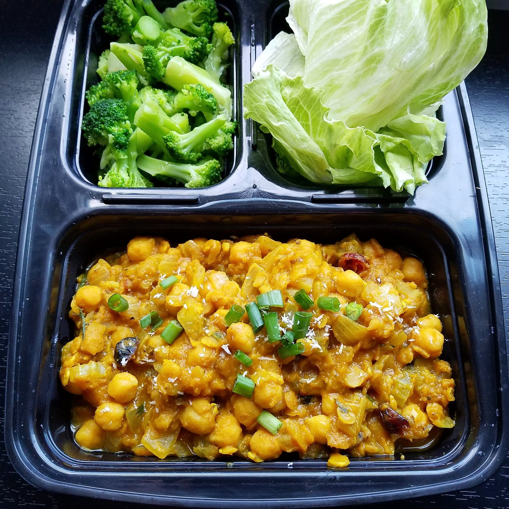

Pumpkin Chickpea & Red Lentil Curry (vegan, gf)

A warm, comforting pumpkin chickpea & red lentil curry for the chilly winter nights. Whether you're looking for a quick lunch prep recipe, or just wanting a cozy dinner for the family, this curry is perfect for the occasion! This recipe is vegan, gluten free, and oil free as well!
You may know by now...but I'm cold. Always. Fall? Cold. Summer? Cold. So wintertime....I'm borderline dying basically. I may or may not be exaggerating but let's just trust me. I'm dying. I just want constant warm foods to heat my body up! I had a fantastic kabocha squash curry from a restaurant lately, and I just neeeeded more. So I pulled together some of my favorite ingredients to make my own. I love red lentils in a curry because they kind of just absorb the liquid, and it becomes a thick, full curry.
It came out fantastic, if I do say so myself. Very filling, savory, yet bits of sweet mixed throughout. I am so happy. This recipe also doesn't use any coconut milk, making this a great low fat curry.
While this recipe list may look intimidating on first glance, it's truly a simple recipe! I pulled most of these ingredients using what I had to use up in my fridge and pantry. The fresh/new stuff I had to get for this was onion, celery, and green onions. Everything else I had! The spices make up the majority of the list heh, so I think you will find this recipe easy as well!
Pumpkin Chickpea & Red Lentil Curry
Serves: 3-4
-
3/4 cup dry chickpeas (135 g, or 1, 15 oz can of chickpeas, drained)
-
1/2 cup dry red lentils
-
3 garlic cloves, minced
-
1 yellow onion, diced
-
3 ribs of celery, diced
-
2 green onions, sliced (whites and greens)
-
1.5 cups canned pumpkin puree
-
1.5 cups almond milk
-
1 TBSP maple syrup
-
1 TBSP red or yellow curry paste
-
1 TBSP curry powder
-
1/2 tsp turmeric
-
1/2 tsp garlic powder
-
1/2 tsp onion powder
-
1/4 cup dried cranberries (or raisins)
-
salt and pepper, to taste
-
Rehydrate the chickpeas as instructed on the bag. Alternatively, you could use canned chickpeas. In a pot, boil the dry lentils until they are cooked and hydrated. Strain off the water, then place the lentils and chickpeas back in the pot and set aside.
-
In a pan, sauté the garlic and onion until lightly browned. You don't need to fully cook the onion, just until fragrant.
-
In the large pot of lentils and chickpeas, add the cooked garlic and onion. Then add all of the remaining ingredients.* Bring to a boil. Reduce heat, and let simmer 10-15 minutes, until the curry is thickened to your liking. It will also thicken a little more after cooling in the fridge.
-
Remove from heat, and serve! Goes great with rice or with lettuce cups.
*If you'd like a curry with more spicy undertones, add 1-2 tsp cayenne pepper when cooking.